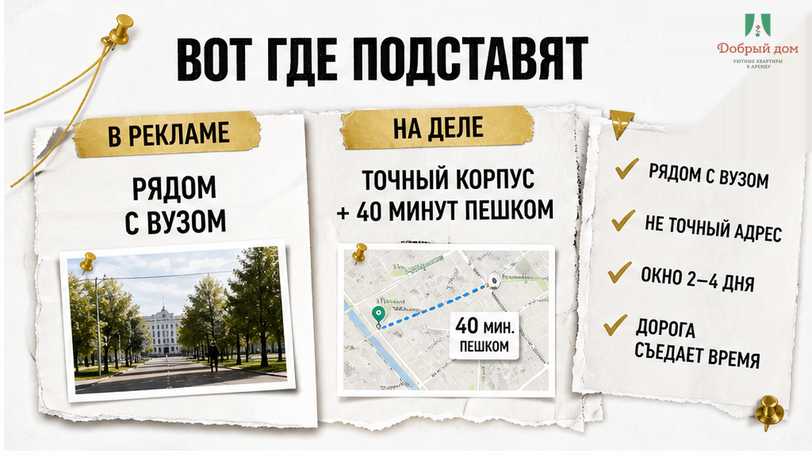
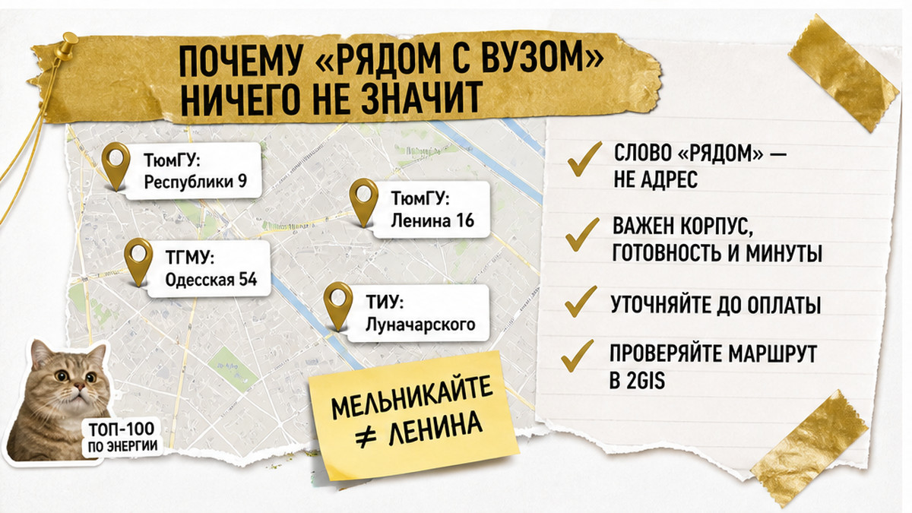
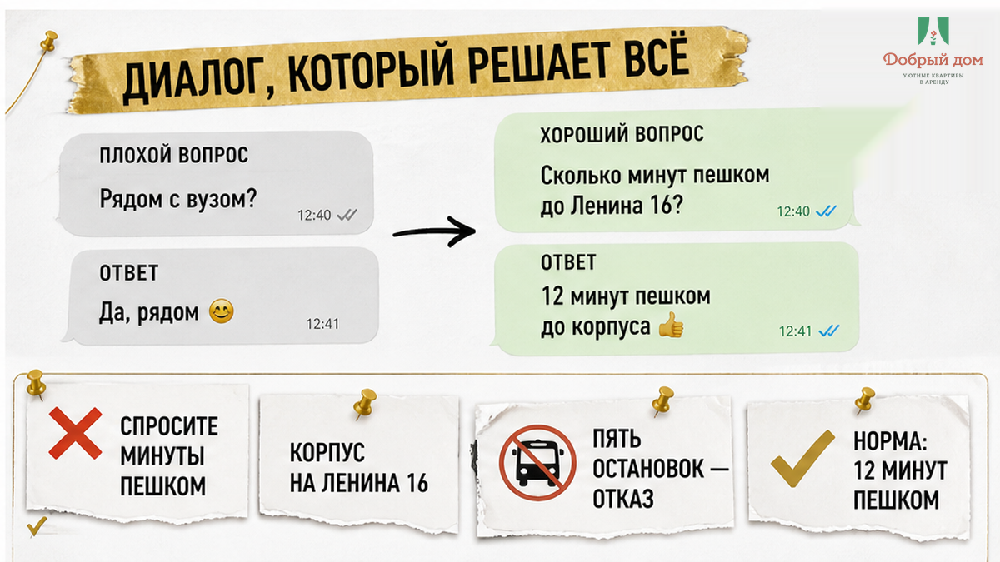
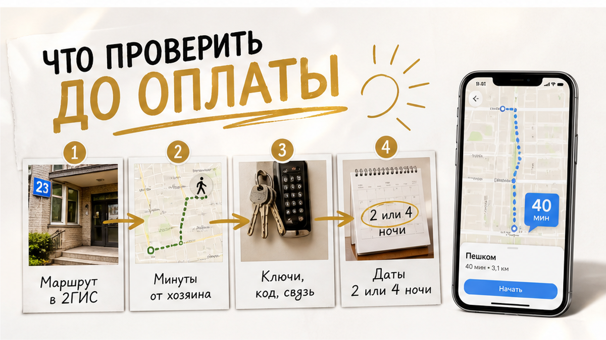

В семь утра телефон показывает: до корпуса — сорок минут пешком.
Сын стоит рядом с папкой документов и спрашивает: «Мы успеваем?»
Вы отвечаете: «Успеваем».
И идёте быстрее, чем хочется.
Вчера заехали на три ночи.
В объявлении было: «рядом с вузом».
Оказалось — рядом с другим корпусом.
Тот, куда сегодня к девяти, стоит через реку, на другой улице.
Такси уже подорожало. Утро, все едут. Автобус — с пересадкой.
Квартира чистая. Хозяин вежливый. Претензий нет.
Просто вы прочитали «рядом» как «пять минут». А для объявления это иногда значит только одно: в том же городе.
Не в цене. Не в чистоте. В одном слове.
«Рядом с вузом» — не адрес. Это настроение объявления.
Вы приезжаете на два-четыре дня: подать документы, забрать студенческий пакет, дождаться распределения в общежитие.
Запаса времени нет. Есть окно.
И это окно съедает дорога, которую никто не посчитал до оплаты.

У Тюменского госуниверситета нет одного адреса.
Корпуса стоят на Республики, Ленина, Перекопской, 8 Марта, Осипенко, Пржевальского, Тургенева, Семакова.
Главный корпус — Республики, 9. Приёмная комиссия — Ленина, 16. Почтовый адрес для документов — Володарского, 6.
Три точки на карте. И ни одна из них не общежитие.
У ТИУ своя география: площадки на Луначарского, Мельникайте, в районе 50 лет Октября.
У медуниверситета часть зданий вообще в микрорайоне КПД.
Хозяин квартиры на Мельникайте честно пишет: «рядом с вузом».
Он не врёт. Просто имеет в виду не ваш корпус.
А вам завтра к девяти на Ленина.

Обычно спрашивают так:
— Вы рядом с университетом?
— Конечно, рядом.
Всё. Разговор закончен. Ошибка уже произошла.
Нужен другой вопрос. Отмычка звучит так:
— Сколько минут пешком до корпуса на Ленина, 16?
Не «до вуза». До адреса, названного вслух.
Дальше слушайте ответ.
— Ну, минут пятнадцать-двадцать, тут всё близко.
Нет. «Тут всё близко» — не минуты.
— Автобус пять остановок, быстро.
Нет. Пять остановок в восемь утра — не пять минут.
— Приедете, разберётесь на месте.
Нет. Так не бронируем.
Нормальный ответ скучный: «От нас до Ленина, 16 — 12 минут пешком, сейчас скину маршрут».
И маршрут приходит.
Если хозяин не может назвать цифру по вашему адресу до оплаты, после оплаты она сама не появится.

Сначала адрес корпуса и маршрут.
Потом деньги и ключ.
Не наоборот.
Вы приехали не жить в квартире. Вы приехали успеть в конкретную дверь в конкретное утро.
Квартира здесь — транспортное решение, а не картинка с диваном.
Развёрнутый чеклист для поездки с ребёнком-абитуриентом — что спросить, что сфотографировать, что уточнить по датам — держим в Telegram-канале. Там же выкладываем свободные даты по своим квартирам.
Если нужно проверить маршрут и даты: Telegram — t.me/Dobriy_dom_72, MAX — MAX, менеджер — Telegram. Квартиры смотрите на сайте «Добрый дом», бронирование — здесь. Телефон: +7 (993) 574-83-22.
Сколько минут пешком — ещё нормально, а после какой цифры вы уже не бронируете?
Кто-то говорит: 15 минут — предел.
Кто-то спокойно ходит 25 и считает это прогулкой.
А кто-то с чемоданом и ребёнком не готов и на 10.
Свою цифру можно прислать в Telegram или MAX. Соберём ответы и покажем, где у родителей проходит реальная граница — она полезнее любых средних по рынку.
Заселение первокурсников в общежития ТИУ в 2026 году начинается с 28 августа.
Первая волна — с 28 августа по 2 сентября.
Подготовлено 1519 мест в 13 общежитиях. Кампусы — на Луначарского, Мельникайте, Республики.
Вот цифра, которую стоит подержать в голове: 1519 мест на 13 общежитий и несколько площадок.
Даже с общежитием адрес временной квартиры может оказаться важнее формулировки «рядом с ТИУ».
По контрактникам результаты по общежитию могут быть известны ближе к 31 августа.
Отсюда короткое окно 28–30 августа, когда семье нужно где-то жить два-три дня.
Квартира нужна не каждому первокурснику. Многим не нужна вообще.
Но если нужна вам — ваше окно совпадает с окном других семей. Выбирать приходится быстро.
Поиск это показывает: «квартиры посуточно Тюмень» — 5875 запросов, «снять квартиру посуточно в Тюмени» — 1902.
Только на одном агрегаторе по Тюмени около 4026 объявлений.
Проблема не в том, что вариантов мало. Проблема в том, что 4026 объявлений «рядом» — это 4026 разных «рядом».

Мы сначала спрашиваем, куда вам утром.
Не «на сколько ночей», а «в какой корпус и к какому времени».
От этого зависит, подойдёт квартира или честнее сразу сказать: «В этот раз не наш вариант».
Маршрут по вашему адресу называем до оплаты, а не после.
Если пешком далеко — так и говорим: далеко. Вот транспорт. Вот сколько это займёт утром.
Инструкцию по заезду отправляем заранее, чтобы после дороги не разбираться с дверью и кодом в темноте.
Квартиры — comfort+: чисто, тепло, есть где разложить документы и погладить рубашку.
Без пафоса. Просто нормально для семьи на три ночи.
Хотите проверить свой корпус до бронирования — пришлите адрес менеджеру в Telegram или MAX. Посчитаем минуты по карте и ответим честно, даже если удобнее будет ближе к Ленина.
Особенно стоит. На две ночи нет запасного дня. Одно опоздание — и переносить некуда.
Проверить. Откройте карту и постройте маршрут от адреса квартиры до адреса вашего корпуса. Тридцать секунд — и вопрос закрыт.
Тогда ориентируйтесь на приёмную комиссию и центр. Адреса приёма документов и расписание лучше смотреть на официальных страницах: порядок приёма документов ТюмГУ и информация ТИУ по заселению в общежитие.
Часто так и есть. Но заселение идёт волнами с 28 августа, и между приездом и ключом от комнаты иногда остаётся пара суток.
Спрашивайте при бронировании, а не в последний вечер. Мы отвечаем по конкретным датам, наличие всегда подтверждаем отдельно.
«Рядом с вузом» — не адрес.
Адрес корпуса. Маршрут на карте. Цифра в минутах.
Только потом оплата.
Один вопрос — «сколько минут пешком до корпуса на такой-то улице?» — экономит сорок минут утром и нервы ребёнка перед очередью.
Если едете в Тюмень с абитуриентом и хотите посчитать минуты заранее: Telegram, MAX, менеджер — Telegram. Квартиры и даты — на сайте, бронирование — добрыйдом-72.рф/booking. Телефон: +7 (993) 574-83-22.
Адрес корпуса можно прислать до оплаты. Посчитаем дорогу заранее.